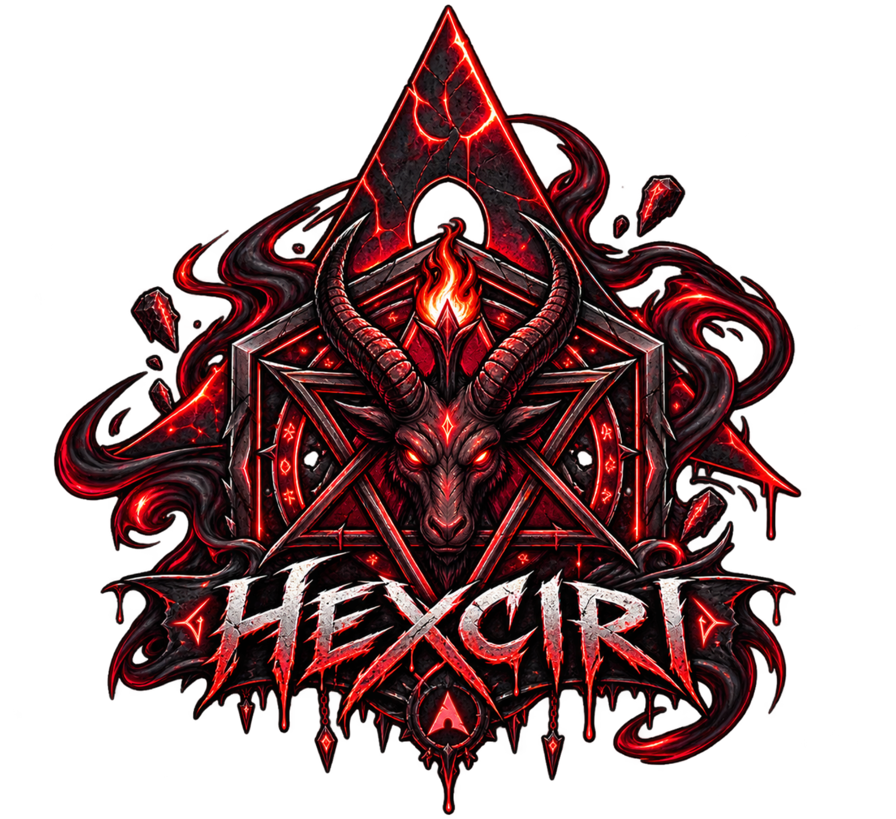

Two ways to run it. V1 is the straightforward one, CachyOS dotfiles kept simple. V2 is the customized one, a minimal EndeavourOS build with a forked Omarchy shell. Both are Hexciri. Pick what fits you.
CachyOS base + dots
curl -LO https://hexciri.dirty.pizza/install.sh && sh install.shEnter V1 →
EOS base + shell
hexciri update covers system, AUR and shellcurl -LO https://hexciri.dirty.pizza/v2/bootstrap.sh; bash bootstrap.shEnter V2 →
Not sure? V1 is the simple pick, the one kept for Kitten. V2 is the one with the shell rebuilt and everything personalized. Either way, you get the menu, the themes, and the keys.